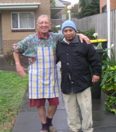
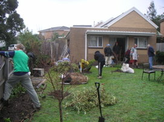
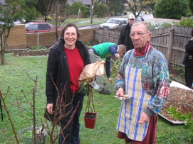
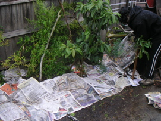
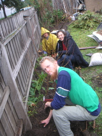
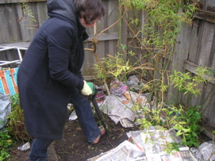
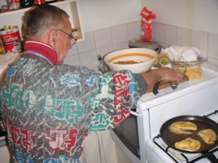
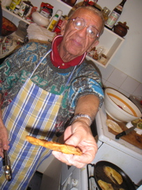
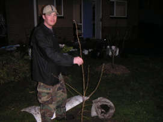

|

Willie and Nelson - el cocinero y el presidente |

Away we go! Here Carey is putting some wire on a north-facing fence for some kiwifruit we went on to plant. |

Di the wonderful arrives! |
|

Sally getting a kitchen-close herb garden sheet mulched out - in accordance with the permaculture motto of "oftenest nearest" or planting the stuff you use most often closest to the kitchen |

|

Di getting rid of some of them pesky roses. |
|

While Willie cooks up a storm |

Looks good Willie! |

As it was getting dark we planted a hazelnut kindly donated by Keith. |